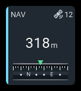
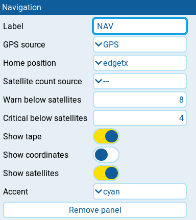

Navigation
| 1x2 | 2x1 | 2x2 |
|---|---|---|
 |
 |
 |
Shows distance from home and the north-up bearing from home toward the model, with optional GPS coordinates and satellite count. Bearing is not aircraft heading, transmitter orientation, or a return-home instruction.
Settings

| Setting | Default | What it does |
|---|---|---|
| Label | NAV | Panel heading. |
| GPS source | GPS | EdgeTX GPS source supplying the model's coordinates. It must return a coordinate table. |
| Home position | edgetx | edgetx uses EdgeTX home; first-arm captures home using the effective armed condition. |
| Satellite count source | none | Optional source reporting a plain nonnegative integer count of locked satellites, not a packed GPS-status value. |
| Warn below satellites | 8 | Warns when the satellite count is strictly below this value. Nonnegative integers, steps of 1. Requires Satellite count source. |
| Critical below satellites | 4 | Critical alarm when the satellite count is strictly below this value. Nonnegative integers, steps of 1; must not exceed Warn below satellites. Requires Satellite count source. |
| Show tape | off | Replaces bearing text with a scrolling direction tape where space permits. |
| Bearing format | degrees | degrees shows numeric azimuth; quadrant shows notation such as N29°E. Shown only when Show tape is off. |
| Show coordinates | off | Shows the model's latitude and longitude where space permits, independently of Show tape. |
| Show satellites | on | Shows the satellite icon and locked-satellite count in the header where space permits. Requires Satellite count source; turning it off does not disable satellite alerts. |
| Accent | cyan | Color used for the normal state: cyan, green, amber, or orange. Alarm and stale states use the shared state colors instead. |
Behavior
Distance from home is always the main reading. It uses metres or kilometres
according to distance. Zero latitude and longitude together mean no fix,
matching EdgeTX's uninitialized GPS values. A valid 0m reading means the
model is at home, not that GPS is unavailable.
Satellite count and alerts
With Satellite count source selected, Show satellites controls the satellite icon and locked-satellite count in the header. It defaults to on, including for existing layouts without this setting. Turning it off hides both the icon and count, not the warning, critical, missing-source, or stale indications. The indicator is also hidden when it cannot fit; alerts remain active. With no source selected, neither the indicator nor satellite alerts appear. The defaults make 0 critical, 4 warning, and 8 normal. Thresholds do not control home capture, and distance never triggers an alarm.
First-arm home
With Home position set to edgetx, home comes from EdgeTX. Selecting first-arm captures a separate AeroGrid home without changing EdgeTX home or the flight controller's return-home position. It uses Arm switch in AeroGrid → Model settings, falling back to an existing panel switch only before model arming has been saved. Saving None disables first-arm capture rather than restoring the fallback. Older layouts with a home arm switch retain first-arm behavior; those without one retain EdgeTX home. AeroGrid must observe disarmed, then armed; opening the widget already armed does not capture home.
With an effective armed switch, AeroGrid captures the home position when the model is first armed. If that capture fails, each later disarm and re-arm tries again until home is set.
A captured home or failed attempt survives telemetry loss, panel recreation, and layout or theme reloads in this widget instance. Panels using the same GPS source and armed switch share the capture. A different pair has its own capture. Home is not saved to disk: restarting the radio, reloading the model, or removing and recreating the widget starts a new session. Separate widget instances have independent homes. Changing the model's Arm switch clears retained AeroGrid homes on every dashboard. The Session reset switch also clears these homes; observe a new disarm/arm transition to capture again. EdgeTX home is unchanged.
To investigate HOME NOT SET, first add a Host diagnostics panel and
select its log section on any AeroGrid screen. The shared in-memory log
records captured/missed or switch unavailable, together with the inputs used
for the decision: current time, availability, freshness, stale state, value,
update time, reported delay, and coordinate validity. These are GPS inputs
for capture attempts, or switch inputs for switch-unavailable events.
Times are 10 ms ticks; GPS delay is seconds. Poll age is
now - updatedAt; combined age is delay * 100 + now - updatedAt.
Missing values appear as nil. No coordinates are logged.
The capture gates and first-transition-only timing are unchanged. The log
cannot recover an attempt made before logging was enabled; reproduce it in a
new widget session. See Host diagnostics for
retention settings and the fullscreen history viewer.
Bearing display
Show tape places the tape below distance in square and tall panels, and
beside it in wide panels. Resizing updates this arrangement. It spans 210
degrees beneath a fixed pointer, with N, E, S, and W labels, major
ticks every 30 degrees, and minor ticks every 10 degrees. Its tint follows
the panel state. When bearing is unavailable, the tape shows the reason
instead of a pointer and scale that could imply due north.
With Show tape off, Bearing format selects numeric azimuth or
quadrant notation. Bearing text and Show coordinates are displayed only
where they fit; a tape that cannot fit yields to distance. Stale data retains
the last bearing with the panel's STALE indication.
Location details
In fullscreen, tap the panel to open a QR code linking to Google Maps at the
model's GPS coordinates, not home. The code and coordinates are frozen when
opened; close and reopen for a newer position. A stale fix is marked
LAST KNOWN POSITION. Without a valid position, tapping does nothing.
Tap anywhere or press RTN/Back/Exit to return. Location details are unavailable outside fullscreen and while editing. The radio generates the QR code without a network connection; following it on a phone uses Google Maps.
States
| Condition | Presentation |
|---|---|
| Valid fix and home | Distance, live bearing, and requested coordinates. |
| GPS source not recognized | --, N/A badge, and NO GPS SOURCE or a shorter form where supporting text fits. |
| Source present but no fix | --, N/A badge, and NO FIX where supporting text fits, unless a satellite alarm takes precedence. |
| Valid fix but no EdgeTX home | No distance or bearing; requested coordinates remain available. NO HOME POSITION or a shorter form, without a failure badge. |
| Waiting for the first arm with a valid fix | No distance or bearing; WAITING FOR ARM or a shorter form. |
| First-arm capture missed with a valid fix | No distance or bearing; HOME NOT SET or a shorter form. |
| Home arm switch unreadable with a valid fix before capture | No distance or bearing; ARM SWITCH UNAVAILABLE or a shorter form. |
| Stale position | Last reading retained, STALE badge, and LAST KNOWN or a shorter form where supporting text fits. |
| Configured satellite count below a threshold | WARN or CRIT badge and state color, even while waiting for a fix or home. |
| Configured satellite source missing or invalid | N/A badge and satellite count -- when Show satellites is on and it fits. GPS readings remain available. |
| Configured satellite count stale | Last count retained and STALE badge. |
Satellite critical is checked before warning, using strict less-than comparisons. An unrecognized GPS source, stale position, or missing, invalid, or stale satellite count takes priority over satellite threshold alarms.